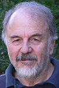

Home » Alumni Weekend » 2013 » Events » Teach-Ins: An Academic Afternoon

Teach-Ins: An Academic Afternoon
Saturday, April 27, 2:30-4 p.m., Porter College Rooms
Choose from a selection of lectures from notable faculty including:
Teach-In with Alan Christy
The Geisha, the Dandy, and the Scientific Revolution in 18th Century Japan
Porter College, Room 249
Alan Christy is an associate professor of history, East Asian studies director, and co-director of the Center for the Study of Pacific War Memories at UC Santa Cruz. He earned his Ph.D. from the University of Chicago and is interested in early modern Japan, modern Japan, the history of social sciences, colonialism, and nationalism. He is fluent in Japanese.
Teach-In with G. William Domhoff
What's New In the World of Dreams
Porter College, Hitchcock Lounge
For those who took G. William Domhoff's course on dreams in the '60s, '70s, or '80s and learned all about the meaning of dreams, or heard about the content of the course second-hand from roommates and friends, there's much new about the gradual development of dreaming from childhood to young adulthood, and about the parts of the brain that have to be active for dreaming to occur.
There's even new information for those who took the course in the '90s or early 2000s, because there is now strong evidence that the neural substrate that supports dreaming is a subsystem of the regions of the brain that are active when our minds are wandering, or daydreaming, during waking. And there's now evidence that the social networks found in the content of our dreams follow the same rules as in waking social networks. But there's still no evidence as to what function, if any, dreams may serve, and there are many elements in dreams that still aren't understood at all.
There will be a quiz at the end, so take careful notes. Just kidding!
Teach-In with David Deamer
First life and next life: An engineer's approach to understanding living systems
Porter College, Room 241
David Deamer is a research professor of biomolecular engineering at UC Santa Cruz. Deamer received his undergraduate degree in chemistry from Duke University in 1961, and Ph.D. in physiological chemistry at the Ohio State University School of Medicine, 1965. Over his scientific career, Deamer has maintained a central focus on biological and synthetic membranes. In a second research area, Deamer investigates how the first living cells could have produced the membrane compartments they needed. Deamer was awarded a Guggenheim Fellowship in 1986 to work with Murchison meteorite samples at the Australian National University, Canberra, where he extended this research. He is currently using nanopore biosensors to detect nucleic acid polymers synthesized in a robotic device that simulates prebiotic conditions.
Teach-In with Harry Noller
Exploring the ribosome: The ancient molecular machine that translates the genetic code into proteins for all living things
Porter College, Room 148
Harry Noller is the Sinsheimer Professor of Molecular Biology at UC Santa Cruz. He has received numerous awards and honors for his work, and his laboratory continues to make important advances in understanding how ribosomes work. He earned his bachelor's degree in biochemistry at UC Berkeley and his Ph.D. in chemistry at the University of Oregon. Before joining the UCSC faculty in 1968, Noller held postdoctoral positions at the MRC Laboratory of Molecular Biology in Cambridge, England, and the Institute of Molecular Biology at the University of Geneva, Switzerland. He was elected to the National Academy of Sciences in 1992.
Teach-In with Jane Pinckard
Video Games as Visual Culture
Porter College, Room 250

Jane Pinckard is associate director of the Center for Games and Playable Media at the University of California, Santa Cruz. She is internationally known for her long-running blog GameGirlAdvance, which explores games and art in a broader cultural context. Jane came to Santa Cruz from Foundation 9 Entertainment, where she worked in Business Development. As a games journalist, Jane’s writing has been seen in a variety of publications including Salon, Theme Magazine, and Xbox Nation. In 2005, she co-created The 1Up show, a weekly video internet show about game culture for the 1Up Network. An expert in gaming, she has lectured at Stanford University, Carnegie Mellon University and Whitman College and served as a non-resident fellow at Stanford Law School in Lawrence Lessig’s Law in Virtual Societies class. Jane has also spoken at South by Southwest, PAX, and the Game Developers Conference, the industry's leading tradeshow for videogame developers. She is the current Vice Chair of the International Game Developers Association.
Jane will be giving a presentation on video games as a powerful form of visual culture, and why examining them with a critical lens can help students become active players rather than passive recipients of the messages conveyed within games.
Register now!
- Home
- Schedule of events
- Places to stay
- Parking and shuttles
- Share your photos
- Invite your friends
- Join Facebook group
- Volunteer opportunities
- Campus activities

Special Events Office
Email: specialevents@ucsc.edu
Phone: (831) 459-5003